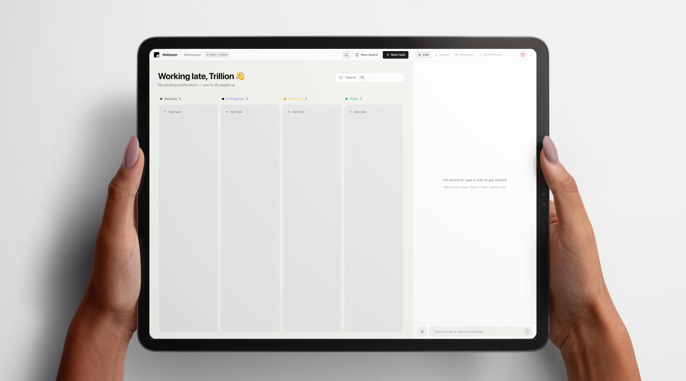
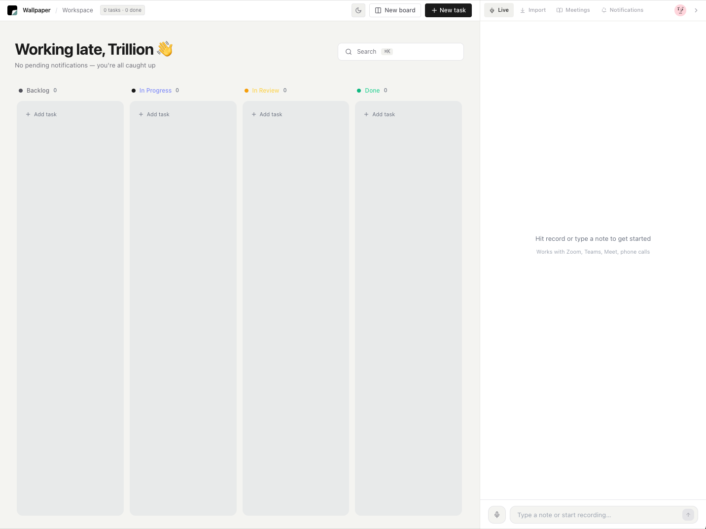
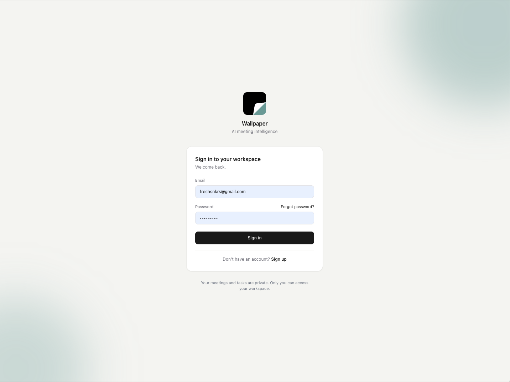
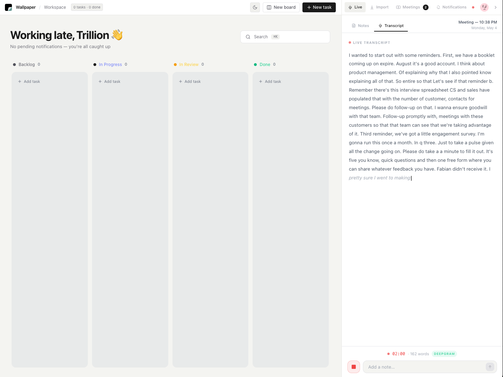
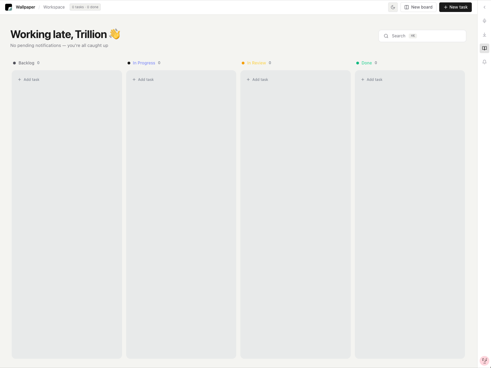
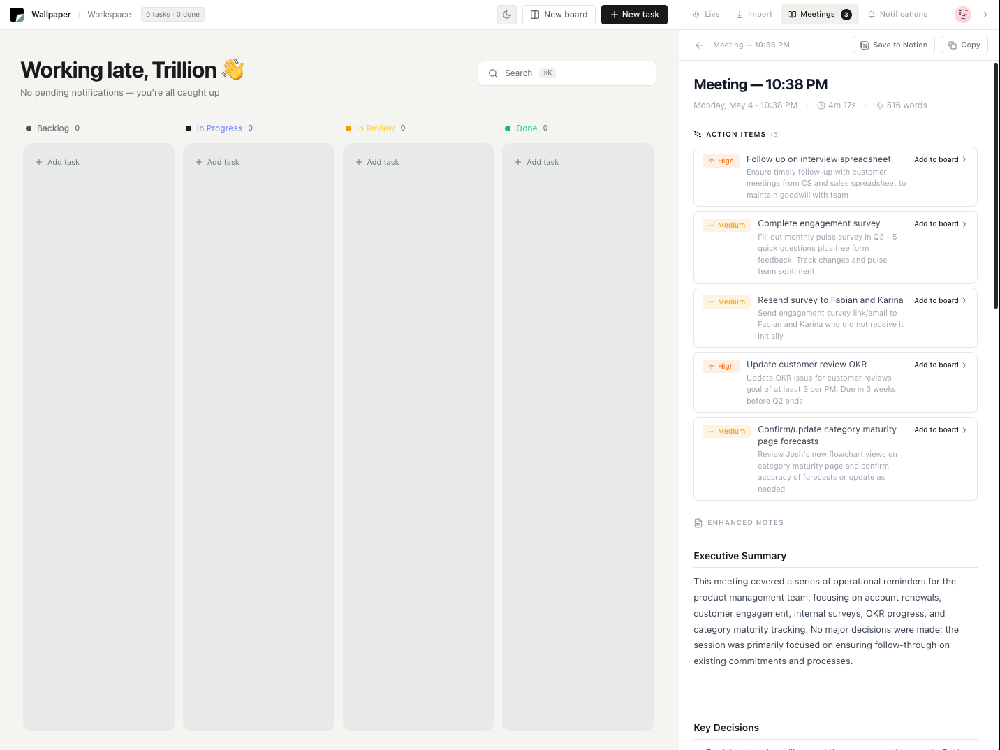
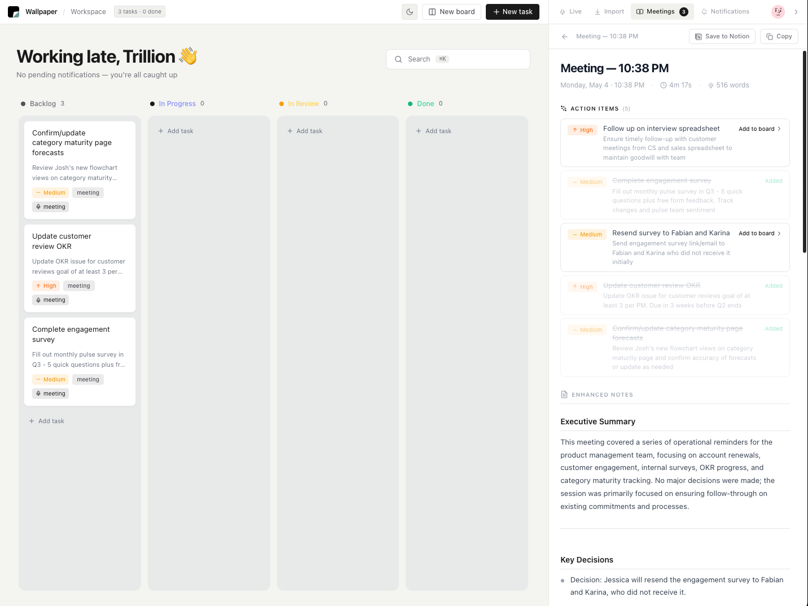

Wallpaper
An AI meeting intelligence tool I built for myself — because I kept missing tasks and context in every meeting I joined.

I Built This Because Meetings Move Fast
The problem isn't attention — it's that being present in a meeting and capturing it accurately at the same time are genuinely competing tasks. The moment you shift focus to write something down, you've already missed the next thing said.
I noticed this in myself: the meetings where I was most engaged were often the ones where my notes were the worst. Not because I wasn't paying attention — because I was paying too much attention to split it toward a notepad.
I didn't want another note-taking app. I wanted something that let me stay fully in the room.
Wallpaper runs in the background during meetings. It transcribes in real time, then uses the Claude API to surface enhanced notes, action items, and decisions. A Kanban board sits alongside the AI panel so tasks captured in the moment can move immediately into a workflow — without me ever having to look away from the conversation.
Most People in Meetings Are Doing Three Things at Once
Listening, thinking, and trying to write. That split attention means something always slips. You either lose the context because you were writing, or you lose the note because you were listening.
Existing tools either required too much setup, captured too much without helping you make sense of it, or produced summaries so generic they weren't actionable. What I needed was something lightweight that ran in the background, stayed out of the way, and only stepped in after the meeting to help me organize what I'd heard.


75/25 — Work First, AI Second
The layout is a deliberate split: 75% Kanban board, 25% AI panel. The Kanban is the primary surface — it's where work lives and moves. The AI panel is a tool you pull from, not something that dominates the experience.
During a meeting, the transcript tab runs silently. You can glance at it to verify it's capturing, but you don't need to manage it. After — or at any point mid-meeting — you can trigger note enhancement. Claude takes the raw transcript and returns structured notes: key points, decisions made, action items with owners where it can infer them.

Live transcript — captures in real time without requiring any interaction.
The Kanban board sits in the same view so tasks can move the moment they're identified. No context switching, no copying between apps — the capture and the workflow are in the same place.

Kanban view — tasks captured during the meeting slot directly into a workflow.
Three Tabs. One Source of Truth.
The AI panel has three tabs: Transcript, Notes, and Actions. The transcript is the raw feed. Notes is where Claude's enhancement lands — structured, readable, and specific to what was actually discussed. Actions isolates task-specific output so you don't have to hunt through notes to find what you need to do.
The goal was output that respects your time — specific enough to be useful, structured enough to scan quickly.


I Designed It. Claude Powers It.
This project uses the Claude API as its core intelligence layer. Transparency matters here — especially for a tool built around trust and accuracy.
Web Speech API handles real-time capture. Claude receives the cleaned transcript for processing, not raw audio — keeping latency low and accuracy high.
Claude structures notes, surfaces decisions, and extracts actions. I wrote and iterated on the prompts until the output was actually useful, not just plausible.
Raw transcript is always preserved and visible. AI output is clearly labeled as enhanced — users can compare and decide how much to trust it.
Building this deepened how I think about AI in product design. The most useful AI isn't the most visible — it's the kind that fits into an existing behavior so naturally that you stop noticing it's there.
I Use It Every Day. That's the Metric.
Wallpaper is something I use every day. Not that it's impressive to show, but that it's actually useful to have. It's made my meetings less stressful and my follow-through more consistent.
Post-meeting recaps dropped from 20+ minutes to under 5. Tasks no longer slip between the meeting and the to-do list. The tool runs without interrupting the meeting — no setup, no bots, no friction. And using it daily taught me more about designing for ambient, background AI than any brief could have.
Solving a real problem for yourself, the same way you'd solve it for users — that's the best kind of design practice.